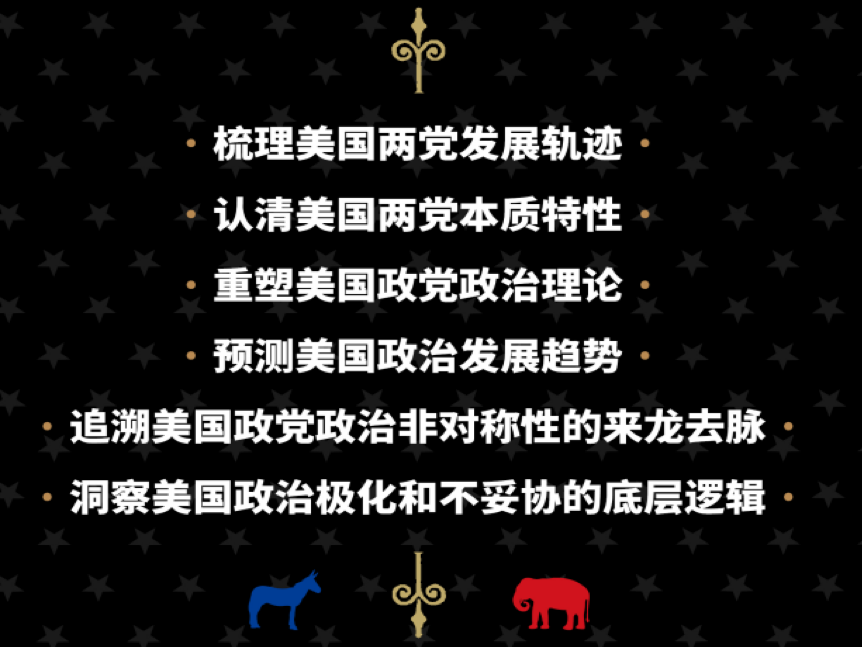
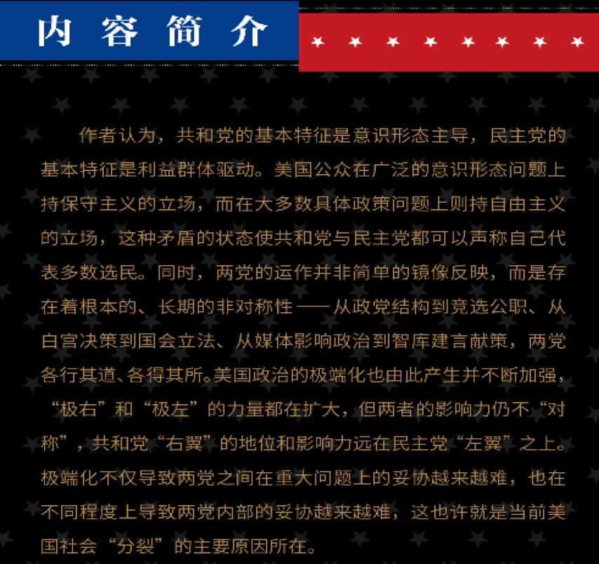

收录于合集 #政观书讯 16个
耶鲁大学校长苏必德（Peter Salovey）在对2025届耶鲁本科生的开学演讲中说：“美国正处于自“9·11事件”以来最大的危机之中。我们正在与一场全球大流行病斗争。”
新冠肺炎疫情给民众生命和国家经济带来严峻挑战，美国民主、共和两党在内政问题上的分歧在压力之下愈发鲜明。
· 如何定位民主党和共和党的最本质区别？
· 如何理解两党各自的思维模式和行为路径？
· 如何探寻美国党争极化现象的底层逻辑？
· 为何两党都认为自己才是多数选民的真正代表？
基于以上问题，迈特·格罗斯曼和戴维·霍普金斯在《美国政党政治——非对称·极端化·不妥协》一书中，以充分的论据剖析两党的独特运作和战略选择。
当代世界出版社2021年出版
本书六大看点

VOX新闻网站主编 埃兹拉·科林：
没有多少著作能够改变你对美国政治的看法。但这本书可以。
《国家事务》杂志编辑 尤瓦尔·莱文：
这本深刻而清晰的著作不仅帮助我们更好地了解我们的极化政治，而且也有助于说明政治学的方法如何帮助弥合美国政治生活中理论与实践之间的差距……在这个令人困惑的时代，这本书是必读书目。

扫描二维码购买本书
1. 京东购买二维码《美国政党政治》
2. 当当购买二维码《美国政党政治》
目录
第1章 绪论
两种不同类型的政党/ 1
20世纪政党非对称: 从通俗知识到学院式学问/ 5
当代政治中的政党非对称/ 11
本书的论点/ 16
本书的论据/ 19
本书的篇章安排/ 20
第2章 民主党人与共和党人的政治观
大众意识形态概念化与衡量/ 27
象征性意识形态中的政党非对称/ 30
意识形态 VS 群体认同: 民主共和两党的政党观/ 38
党派性根源: 意识形态偏好还是社会认同?/ 49
种族认同和党派构成/ 51
国际背景下的美国政党形象/ 55
两党民众基础的不同执政要求/ 60
美国公众中具体问题上的自由主义与一般原则上的保守主义/ 65
《平价医疗法》中的政治：面向大众的政党非对称的案例研究/ 74
美国选民中的非对称党派支持/ 80
第3章 意识形态运动与社会群体联盟
将非对称置于政党理论中/ 87
“热衷于搞意识形态联盟的人”与政党极化现象的兴起/ 90
保守主义运动是如何俘获共和党的/ 95
向“自由建制派”发起挑战的保守主义运动/ 109
民主党群体联盟的持续与演变/ 113
美国政党发展中的非对称/ 124
比较背景下的当代美国政党/ 130
政党结构的非对称性/ 134
党派支持联盟中的利益集团和投票联盟/ 143
种族政治与政党联盟/ 150
政党发展与政党网络的非对称/ 156
第4章 平庸的论战
自由派主导学术界和媒体/ 162
保守派不信任媒体和学术研究/ 168
创建一个替代的保守派媒体/ 180
构建自由媒体世界的失败/ 187
选择性接触的党派差距/ 194
自由与保守媒体的内容差异/ 206
保守派电台的政治声音/ 212
福克斯新闻频道：共和党的电视台/ 218
保守派思想库作为替代信息来源的兴起/ 223
自由派智库的多重角色/ 231
接受科研成果的差异/ 241
左派和右派对美国历史的解读/ 244
美国政治的信息不匹配/ 246
第5章 诗歌与散文式竞选
总统提名概述/ 252
里根之前的共和党总统候选人提名/ 254
后里根时代的共和党总统候选人提名/ 262
克林顿之前的民主党总统候选人提名/ 276
20世纪90年代以来民主党总统候选人提名/ 282
国会议员初选中的党派非对称/ 293
大选中两种不同的竞选模式/ 300
不匹配的双方之间进行的选举竞争/ 312
第6章 红蓝色彩的决策
党派非对称与美国政策制定/ 318
国会中的非对称极化/ 322
政策导向与保守派困境/ 325
国会中的两党与政策产出/ 331
未能实现的自由派政党改革承诺/ 337
社会身份与民主党决策/ 346
国会中的保守主义运动/ 354
纽特·金里奇与好斗的保守主义兴起/ 357
右翼积极分子与治理失调/ 366
民主党和共和党如何讨论政策/ 376
行政部门的红蓝决策/ 381
美国人的国家：淹没的、分裂的和委派的/ 385
非对称治理与美国决策/ 392
第7章 结论：美国政治的失衡
当代共和党人：实践违背原则/ 396
当代民主党人：追求政策目标/ 403
朝着更加均衡的两党制发展/ 410
致 谢 /415
注 释 /417
参考文献 /452
译后记 /471
编辑：蒋晟